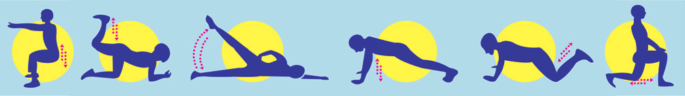
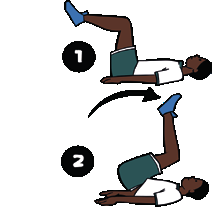

GINÁSTICAS
Iniciando a busca
Ao trabalhar com essa unidade temática, espera-se que os alunos desenvolvam as seguintes habilidades e competências:
• (EF67EF08) Experimentar e fruir exercícios físicos que solicitem diferentes capacidades físicas, identificando seus tipos (força, velocidade, resistência, flexibilidade) e as sensações corporais provocadas pela sua prática.
• (EF67EF09) Construir, coletivamente, procedimentos e normas de convívio que viabilizem a participação de todos na prática de exercícios físicos, com o objetivo de promover a saúde.
• (EF67EF10) Diferenciar exercício físico de atividade física e propor alternativas para a prática de exercícios físicos dentro e fora do ambiente escolar.
• Competências específicas: 1, 8, 10
• Competências gerais: 1, 8, 10
• Competências de linguagens: 1, 2, 3, 4
A ginástica chegou às escolas brasileiras por meio de Rui Barbosa, um dos responsáveis por implementar essa prática corporal no ambiente escolar. Anteriormente ela era praticada para o desenvolvimento de corpos saudáveis e fortes para servir ao Estado nas guerras e para alavan-car os processos de produção impulsionados pela revolução industrial.
Atualmente, de acordo com a BNCC,
são propostas práticas com formas de organização e significados muito diferentes, o que leva à necessidade de explicitar a classificação adotada: (a) ginástica geral; (b) ginásticas de condicionamento físico; e (c) ginásticas de conscientização corporal.
A ginástica geral, também conhecida como ginástica para todos, reúne as práticas corporais que têm como elemento organizador a explora-ção das possibilidades acrobáticas e expressivas do corpo, a interação social, o compartilhamento do aprendizado e a não competitividade.
Podem ser constituídas de exercícios no solo, no ar (saltos), em aparelhos (trapézio, corda, fita elástica), de maneira individual ou coletiva, e combinam um conjunto bem variado de piruetas, rolamentos, paradas de mão, pontes, pirâmides humanas etc. Integram também essa prática os denominados jogos de malabar ou malabarismo.
As ginásticas de condicionamento físico se caracterizam pela exerci-tação corporal orientada à melhoria do rendimento, à aquisição e à manutenção da condição física individual ou à modificação da composição corporal. Geralmente, são organizadas em sessões planejadas de movimentos repetidos, com frequência e intensidade definidas.
Podem ser orientadas de acordo com uma população específica, como a ginástica para gestantes, ou atreladas a situações ambientais determinadas, como a ginástica laboral.
EDUCAÇÃO FÍSICA 48
As ginásticas de conscientização corporal reúnem práticas que empregam movimentos suaves e lentos, tal como a recorrência a posturas ou à conscientização de exercícios respiratórios, voltados para a obtenção de uma melhor percepção sobre o próprio corpo. Algumas dessas práticas que constituem esse grupo têm origem em práticas corporais milenares da cultura oriental. (2017, p. 215, 216).
Diante do exposto, faça questionamentos: O que é ginástica? Quais tipos de ginástica vocês conhecem? Qual a importância da ginástica para a vida? Qual delas seria mais importante para ser praticada em nossa escola? Por que o exercício físico é tão importante para o bem-estar?
Qual a diferença entre praticar uma atividade física e praticar um exercício físico? No seu município, as políticas públicas preocupam-se em oferecer maneiras diversificadas de práticas esportivas que atendam a população como um todo? Como? Quais exercícios solicitam diferentes capacidades, como força, velocidade, resistência e flexibilidade? De que forma podemos motivar as pessoas da comunidade e da escola a praticarem exercícios físicos?
Leitura complementar
Atividade física e exercício são a mesma coisa?
Atividade física refere-se a qualquer movimento do corpo que envolva esforço e, portanto, exige energia além daquela necessária em repouso.
Tarefas do dia a dia, como jardinagem simples, afazeres domésticos e subir as escadas no trabalho são exemplos da atividade física básica. Incluir essas atividades em sua rotina diária é útil, mas as pessoas que praticam somente esse tipo de atividade são consideradas sedentárias.
Exercício físico é uma forma mais dire-
cionada ou específica de atividade física para
melhora da saúde. Tanto a atividade física
como o exercício incluem movimentos que
exigem energia, mas a finalidade do exercício é
melhorar ou manter o condicionamento físico.
O condicionamento físico relacionado à saúde
inclui condicionamento aeróbico e muscular,
como a flexibilidade. Exemplos de exercícios
de condicionamento físico relacionados à
saúde são a caminhada rápida ou o jogging, a
musculação e o alongamento.
BUSHMAN, Bárbara (Org.). Manual completo
de condicionamento físico e saúde do
ACSM. São Paulo: Phorte, 2016. p. 20.

Mulher praticando jogging, 2015.
USCDCP / Pixnio
Na escola, é a Educação Física que proporciona possibilidades de movimento corporal. Por meio da ginástica, você poderá organizar as aulas de maneira que os alunos se movimentem, descubram e reconheçam as possibilidades e limites do próprio corpo.
EDUCAÇÃO FÍSICA 49
Sugestão de LeiturA
Clique para mostrar a sugestão
A Educação Física
e a promoção da qualidade de vida
na escola: desafios
na saúde de comunidades escolares Roberto Vilarta Disponível em: https://cutt.ly/ CHfQrlu. Acesso em: 28 abr. 2022.
Corpo em ação
Ginástica de condicionamento físico
Vivemos em um mundo em constante evolução. O uso da tecnologia tem impactado muito a vida das pessoas. Como praticidades da vida moderna, as tecnologias trouxeram muitas facilidades, no entanto, levamos uma vida cada vez menos ativa por termos à disposição mais conforto com menos esforço. Como consequência, junto com todas essas facilidades, muitas doenças como estresse, alteração da pressão arterial, cardiopatias, baixa capacidade pulmonar, triglicerídeos em grande escala, entre outras, vêm atingindo cada vez mais pessoas. Doenças, antes exclusivas em idosos, têm acometido crianças em idade escolar.
As atividades físicas sempre estiveram presentes no dia a dia. A rotina da humanidade acompanhou as mudanças e as características da época, que fazem com que as atividades mudem e se atualizem constantemente.
Atualmente, as opções de ginásticas de condicionamento físico são muitas. Toda ginástica destinada a manter a boa forma e funções vitais em plena atividade, a aumentar disposição e a desenvolver as aptidões físicas é considerada exercício físico de crucial importância para a população em geral. Torna-se fundamental estarmos em dia com nossas capacidades físicas condicionantes, que são quaisquer atributos físicos possíveis de serem treinados nos indivíduos. Esses atributos correspondem à parte física dos movimentos corporais juntamente com as habilidades motoras para se obter um rendimento físico satisfatório. São eles:
Força – pelo resultado de contrações musculares conseguimos vencer uma resistência.
Velocidade – em curto espaço de tempo realizar ações vigorosas, geralmente com intervalos.
Resistência – conseguir manter o esforço físico durante o maior tempo possível, suportando e recuperando-se da fadiga com eficiência.
Equilíbrio – quando um corpo é sustentado em uma base e em diferentes posições, devido a uma combinação de ações musculares coordenadas e sincronizadas que “lutam” contra o efeito da gravidade para se manter íntegro.
Flexibilidade – amplitude máxima do movimento que a articulação suporta da carga de trabalho sem sofrer danos.
Agilidade – dependente da explosão muscular, que é a eficiência máxima da junção entre força e velocidade, proporciona a capacidade de mudanças repentinas e velozes da direção que o corpo está tomando.
EDUCAÇÃO FÍSICA 50
Leitura complementar
Academia ao ar livre
A Academia ao ar livre visa à melhora da condição física, qualidade de vida e a saúde das pessoas. Os equipamentos dessas academias não têm peso e usam apenas a força do corpo para exercícios de musculação e alongamento. Trata-se de um sistema que se adapta ao usuário utilizando o peso do próprio corpo, criando resistência e gerando benefício personalizado, independente de idade, peso e sexo. São indicados para maiores de 12 anos e principalmente para pessoas da terceira idade, que perdem naturalmente um pouco da força muscular com o passar dos anos, mas podem ser usados por qualquer pessoa, funcionando como uma academia de ginástica ao ar livre.
Disponível em: https://cutt.ly/KHfaFw4. Acesso em: 8 maio 2022.
Academia ao ar livre. Jundiaí, SP, 2015.
Leia o fôlder no site: https://tinyurl.com/yalylvof (acesso em: 29 abr. 2022) e descubra como realizar as atividades na academia ao ar livre.
Ginástica localizada
Quando utilizamos exercícios físicos sistemáticos e direcionados a um grupo muscular, visando uma área específica do corpo, por meio de um determinado número de séries e de repetições, estamos desenvolvendo a ginástica localizada.
A ginástica localizada deve abranger exercícios que trabalham de maneira isolada as principais partes do corpo, como os braços, as pernas, a parte superior do tronco, os músculos dorsais e os músculos abdominais. A frequência deve ser de duas a três vezes por semana, e em dias alternados. A duração é de, no mínimo, quinze minutos por sessão e o número de repetições varia entre oito e vinte, antes do surgimento da fadiga acentuada ou da redução na qualidade dos movimentos.
 Pietro Luigi Ziareski
EDUCAÇÃO FÍSICA 51

Além de aprimorar a consciência
corporal, a ginástica localizada propor-
ciona benefícios ao organismo. Em es-
pecial, oferece um tipo de exercício que
todos podem e conseguem participar.
Alongamento
Os alongamentos musculares são
exercícios naturais destinados a pro-
mover o relaxamento e realinhamento
da musculatura antes e depois de uma
Estação de ginástica para deficientes ao ar livre. São Paulo, SP, 2017.
atividade física ou de determinados
tipos de esforço. Com os músculos
alongados, as articulações ficam flexíveis, aumentando a capacidade de geração de força e melhorando a oxigenação celular. Dessa forma, a musculatura recebe melhor a carga de trabalho por estar bem condicionada e a fadiga começa a ser mais tardia.
Organizando a atividade
Materiais necessários: espaço livre.
Número de aulas estimado: 1
Objetivo: experimentar e fruir exercícios físicos que solicitem diferentes capacidades física, como flexibilidade, percebendo seus limites e superações.
Confira adiante uma rotina a ser seguida. Cada exercício deve ser executado duas vezes com 30 segundos cada, pois a maioria é de atuação bilateral. Os modelos de alongamentos gerais são para membros superiores, inferiores, quadril e pescoço. Siga os modelos das figuras e faça os exercícios para os dois lados.
Clique na imagem pra interagir.
EDUCAÇÃO FÍSICA 52

Exercício 4 – cotovelo flexionado e palma da mão voltada para as costas, fazendo força para baixo. Lembre-se de fazer para o outro lado, pois é um exercício bilateral.
Exercício 5 – corpo ereto, um braço atrás do corpo enquanto o outro puxa a cabeça lateralmente. Lembre-se de fazer para o outro lado, pois é um exercício bilateral.
Exercício 6 – passando o braço pela frente do tórax, na altura dos ombros, puxá-lo em direção ao peito e manter a tração. Lembre-se de fazer para o outro lado, pois é um exercício bilateral.
Exercício 7 – pernas estendidas, flexionar o quadril levando as mãos até os pés.
Exercício 8 – pernas levemente afastadas, uma mão na cintura e a outra elevada, flexionar o tronco lateralmente. Lembre-se de fazer para o outro lado, pois é um exercício bilateral.
Exercício 9 – apoiar-se em alguma superfície fixa, manter o tronco ereto, puxar uma das pernas flexionando o joelho e elevando o pé até próximo dos glúteos. Lembre-se de fazer para o outro lado, pois é um exercício bilateral.
Exercício 10 – apoiar as mãos em uma parede, encostando a cabeça nela, flexionar o joelho da perna que vai estar na frente e próxima à parede, enquanto a perna de trás permanece completamente estendida e os calcanhares não podem perder o contato com o chão.
Lembre-se de fazer para o outro lado, pois é um exercício bilateral.
Exercício 11 – corpo totalmente ereto, elevar a perna sobre uma superfície com aproximadamente a altura da cintura e mantê-la completamente estendida. Lembre-se de fazer para o outro lado, pois é um exercício bilateral.
Exercício 12 – corpo completamente ereto, elevar a perna lateralmen-onfim dos S
te sobre uma superfície com aproximadamente a altura da cintura e ér
mantê-la completamente estendida. Lembre-se de fazer para o outro ões:
lado, pois é um exercício bilateral.
EDUCAÇÃO FÍSICA 53
Abdominal/Core
Exercícios abdominais são amplamente conhecidos e destinados a fortalecer e desenvolver o centro de gravidade dos seres humanos por meio dos músculos do abdômen. Existem diversos tipos de exercícios abdominais para abranger toda a musculatura da região, incluímos aqui o dorsal, que apesar de trabalhar as costas, mantém-se dentro do nosso objetivo que é fortalecer o core.
Mas o que é core? Trata-se da parte central do corpo, composta por 29 pares de músculos do tronco, pelve e quadris. Suas principais funções são: manter o alinhamento, favorecer a base de suporte do corpo, pre-venir lesões e gerar força. Ele forma um centro estabilizador estático ou em movimento, além de ter papel importante no bom funcionamento dos órgãos internos.
Os músculos abdominais e os do core fortalecidos são de suma importância para a manutenção da postura, mantendo a coluna em posição confortável sem provocar estresse nela, otimizando o gasto energético, pois, quanto maior a massa muscular, maior o consumo de energia (queima calórica), o que retarda o tempo de instalação da fadiga muscular.
Organizando a atividade
Materiais necessários: espaço livre.
Número de aulas estimado: 3 aulas.
Objetivo: experimentar e fruir exercícios físicos que solicitem diferentes capacidades física, como força muscular, velocidade e resistência, percebendo seus limites e superações.
Série de exercícios para trabalho de abdômen e dorsal , que pode ser repetida em aulas: na primeira com 15 repetições, na segunda com 25
repetições e na terceira, 35 repetições ou mais. Foco no core, buscando equilíbrio no centro de gravidade.
Exercício 1 – em decúbito dorsal, ficar apenas com o apoio dos glúteos, elevando e aproximando as pernas e os braços estendidos.

Exercício 2 – em decúbito dorsal, joelhos flexionados em 45°, sendo que o tronco também sobe no máximo 45°.
EDUCAÇÃO FÍSICA 54

Exercício 3 – em decúbito lateral, manter o corpo em prancha completamente estendido, somente com dois apoios, dos pés e da mão, sem flexionar o cotovelo.
Exercício 4 – em decúbito dorsal, costas completamente apoiadas no chão, elevar as pernas eretas de maneira alternada para cima, subindo 45°.
Exercício 5 – em decúbito dorsal, pernas estendidas e mãos atrás da nuca, puxar a perna flexionando o joelho direito, enquanto sobe o tronco e toca o cotovelo esquerdo na perna que subiu.
Exercício 6 – em decúbito dorsal, pernas estendidas e mãos atrás dos glúteos apoiadas no chão, puxar as duas pernas simultaneamente, flexionando os joelhos, enquanto sobe o tronco e aproxima-o dos joelhos.
Exercício 7 – em decúbito dorsal, joelhos estendidos e mãos apoiadas ao lado do corpo no chão, levantar as duas pernas simultaneamente sem flexionar os joelhos, enquanto o tronco permanece estabilizado no chão.
Exercício 8 – em decúbito dorsal, joelhos estendidos e mãos apoiadas ao lado do corpo no chão, levantar as duas pernas simultaneamente sem flexionar os joelhos, porém, jogando-as para os lados, alternando para lado direito e lado esquerdo, enquanto o tronco permanece estabilizado no chão.
Exercício 9 – em decúbito dorsal, joelhos flexionados e mãos em frente ao tórax, levantar as duas pernas simultaneamente com a rotação do tronco para os dois lados, alternando para lado direito e lado esquerdo.
Exercício 10 – em decúbito dorsal, pernas estendidas e mãos atrás dos glúteos ou apoiadas no chão, puxar as duas pernas simultaneamente em direção ao corpo, flexionando os joelhos, enquanto sobe a perna para o alto e eleva os glúteos, controlando a volta para não bater bruscamente no chão.
EDUCAÇÃO FÍSICA 55


Exercício 11 – em decúbito ventral, quatro apoios, somente mãos onfim dos S
Exercício 12 – em decúbito ventral, quatro apoios, somente cotovelos e pés, manter o corpo ereto e
elevado na posição de prancha, aguentando tempo
superior a 30 segundos, que pode ser aumentado
gradativamente.
Força de membros inferiores e superiores
Agachamento – com as pernas ligeiramente afastadas, realizar o movimento de “sentar” no ar com a flexão dos joelhos a 90°, sem deixar o joelho passar para frente da linha da ponta do pé. Em seguida, estender os joelhos novamente durante 15 repetições seguidas, por 3 vezes.
Agachamento em abdução – com as pernas bastante afastadas, fazendo rotação externa dos pés e joelhos, realizar o movimento de “sentar” no ar com a flexão dos joelhos a 90°. Em seguida estender (não totalmente) os joelhos durante 15 repetições seguidas, por 3 vezes.
Afundo – manter as pernas em afastamento anteroposterior, com a perna que está atrás praticamente toda estendida, a perna da frente flexionando até aproximadamente 90° com tronco ereto. Afundar até praticamente tocar o joelho da perna de trás no chão, subindo lentamente em seguida durante 15 repetições seguidas (para cada perna), por 3 vezes.
Panturrilha – usar o apoio de uma parede ou algo similar, ficando afastado aproximadamente 30 cm, manter-se na ponta dos pés e elevar os calcanhares até o máximo que conseguir. Voltar lentamente até o limite que não encoste novamente os calcanhares no chão, durante 15 repetições seguidas, por 3 vezes.
Pliometria – partindo do chão e parado em frente ao caixote, agachar e saltar para cima do caixote estendendo as pernas em cima dele.
Depois, saltar de cima do caixote, amortecendo a queda até os glúteos chegarem muito próximos dos calcanhares e saltar imediatamente, sem parar, o mais rápido e longe possível. Repetir 5 vezes cada movimento.
Tríceps banco – sentar no banco apoiando as duas mãos na borda, estender as pernas à frente do banco e descer lentamente até os tosan
glúteos se aproximarem do chão. Em seguida, subir lentamente até a extensão total dos cotovelos. Realizar 3 séries com 12 repetições.
onfim dos S
Flexão de tríceps – com o corpo ereto em decúbito ventral, apoiar gio Bér
os dois braços no chão com as mãos bem próximas ao corpo (om-ões: S corpo até extensão total dos cotovelos. Realizar 3 sé ries
com 12 repetições.
EDUCAÇÃO FÍSICA 56


Flexão de tríceps com bola, para trabalho de peitorais – com tosan
o corpo ereto em decúbito ventral, apoiar os dois braços no chão com as mãos bem afastadas, subir o corpo até extensão total dos onfim dos S
cotovelos e fazer a troca das mãos sem parar o exercício (a que gio B
estava no chão passa para cima da bola e a que estava na bola vai ér
para o chão). Realizar 3 séries de 12 repetições.
ões: Saç
Bíceps com toalha – apoiado na parede para ter apoio, segurar Ilustr
com igual força em ambas as mãos uma toalha grande passando-a em baixo do pé, enquanto o joelho ainda está estendido, e puxar lentamente a perna para cima, enquanto realiza uma flexão dos cotovelos. Retornar lentamente até a extensão dos cotovelos. A intensidade do exercício (peso) pode ser controlada com o tanto de resistência aplicada na perna.
Velocidade
É possível atingir objetivos concretos com treinamentos curtos e intervalados, com tiros curtos de corrida de velocidade máxima. Comece marcando com cones dois pontos distantes
5 metros um do outro, inicialmente, realizando 3 execu-
ções em velocidade máxima, partindo do ponto inicial
(estático) e aplicando máxima velocidade até o ponto
final. A seguir, afaste os cones a 10 metros um do outro, realizando a mesma execução anterior durante 3 vezes.
Finalizando a série, afaste os cones a 20 metros, também
realizando 3 vezes os tiros com a maior intensidade possível entre o ponto inicial e o final. Ao término, faça uma recuperação ativa (em movimento, com caminhada controlada) para que os batimentos cardíacos retornem gradativamente ao normal.
Resistência
Estabeleça um percurso acima do tempo de 12 minutos ininterruptos, elevando os batimentos cardíacos de modo controlado e sistemático, aumentando consideravelmente a demanda de oxigênio para as células musculares e para os pulmões, exigindo assim maior trabalho e ativação cardíaca saudável.
AvaliandO
Em uma roda de conversa, solicite que os alunos relatem suas experiências: De que forma experimentaram e fruíram os exercícios físicos (foi fácil ou difícil)? Como identificaram os tipos de exercícios que exigiam força, velocidade, resistência e flexibilidade? Peça que expliquem a diferença entre exercício físico e atividade física.
Avalie se eles identificaram quais as capacidades físicas foram desenvolvidas em cada exercício físico. Observe as práticas corporais realizadas por eles e avalie o empenho de cada um para realizá-las, superando limites. Verifique se identificaram as consequências do sedentarismo, que pode causar danos à saúde.
EDUCAÇÃO FÍSICA 57